An installation on the floor of Galeria apARTe in Iași: bedsheets laid edge to edge, pillows, small lamps, crumpled paper, a small screen and a projected bed. People walked through it, and some lay down in it. The title is the Greek word for speaking freely.
About the project
The curator, Cătălin Soreanu, describes the aim as a dialogue between author and installation on one side and viewer and participant on the other, with the emphasis on the relation between the space and the people taking part (PhD thesis abstract, p. 14).
- Opening9 June 2011, 18:00
- VenueGaleria apARTe, Str. Sărăriei 189, Iași
- CuratorCătălin Soreanu
- CoordinatorLavinia German
- ProgrammeMit · Corp · Spațiu, 2–25 June 2011, coordinated by Matei Bejenaru, Bogdan Teodorescu, Lavinia German and Andrei Cozlac
- ContextCollaboration between the Photography, Video and Computer Image Processing and the History and Theory of Art programmes, George Enescu National University of Arts, Iași

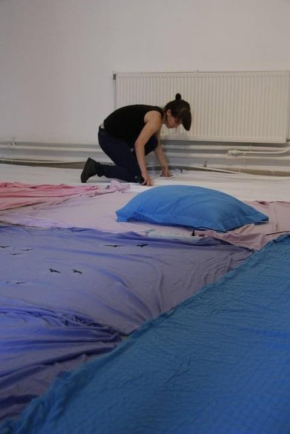
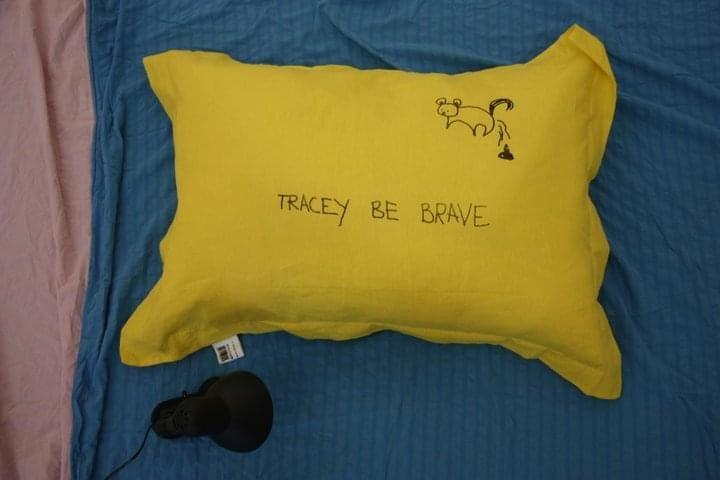
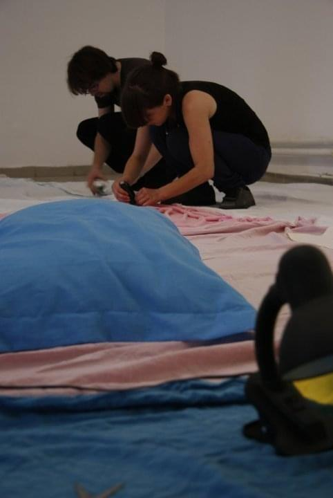
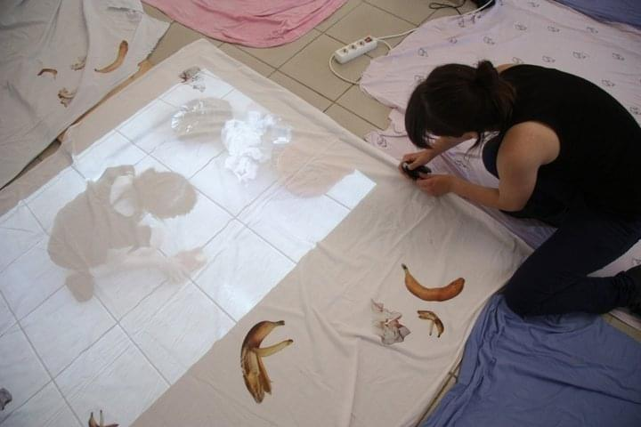
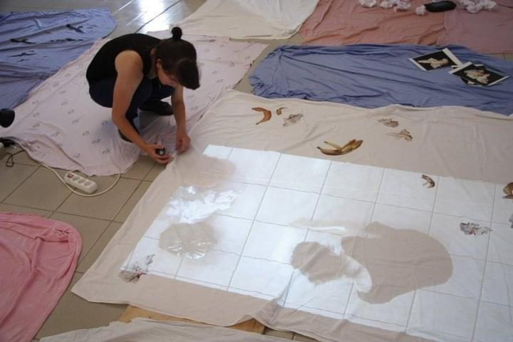
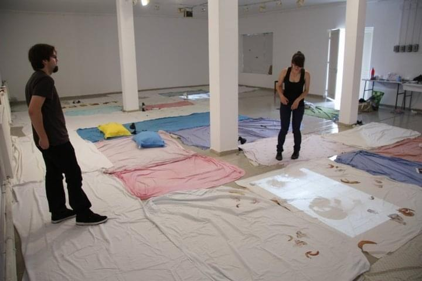
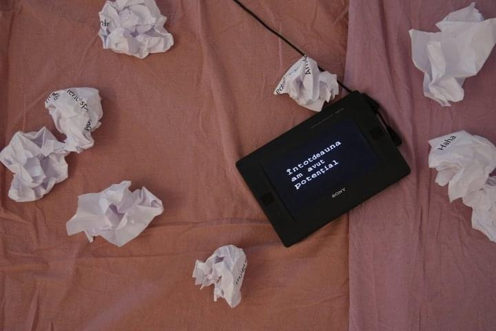
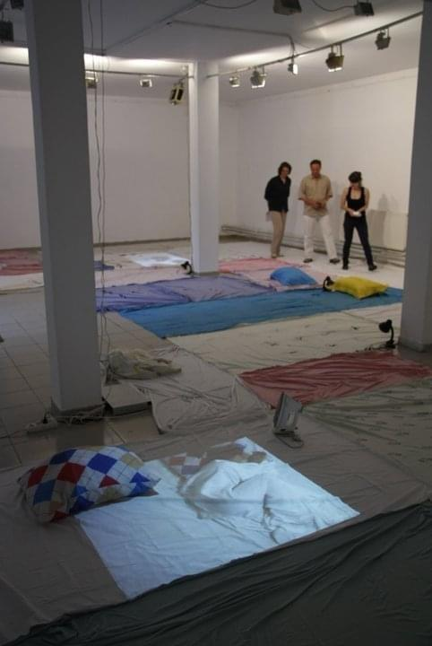
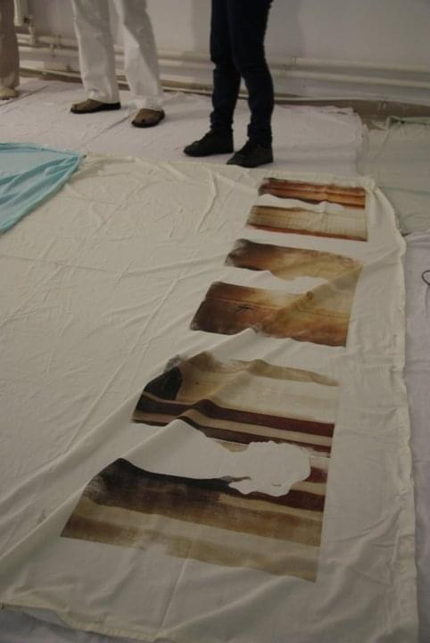
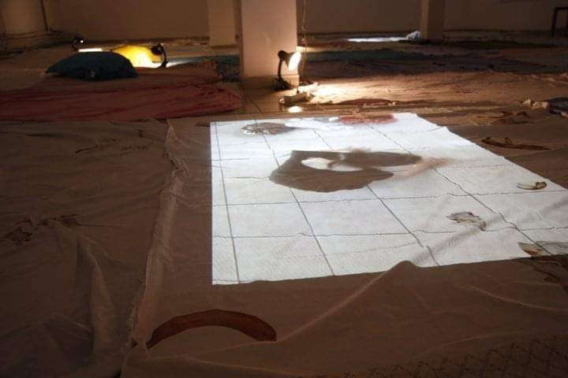
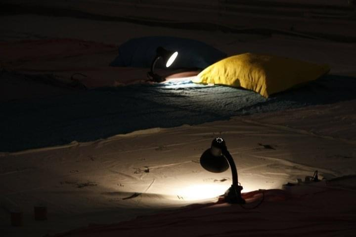
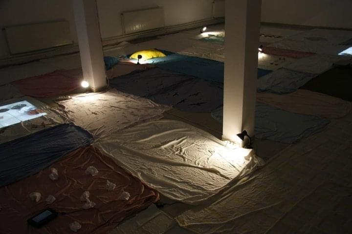
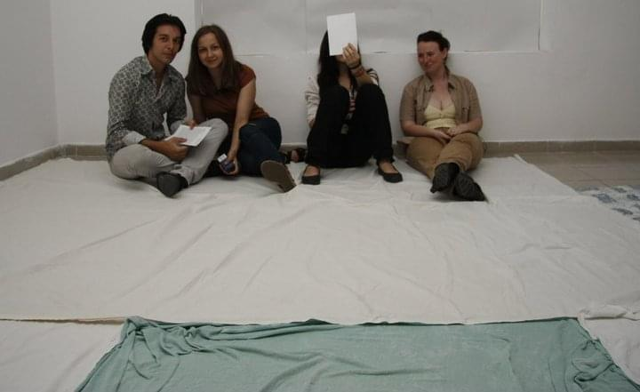
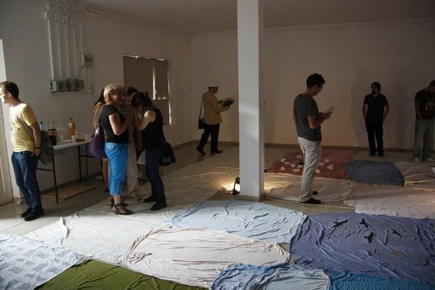
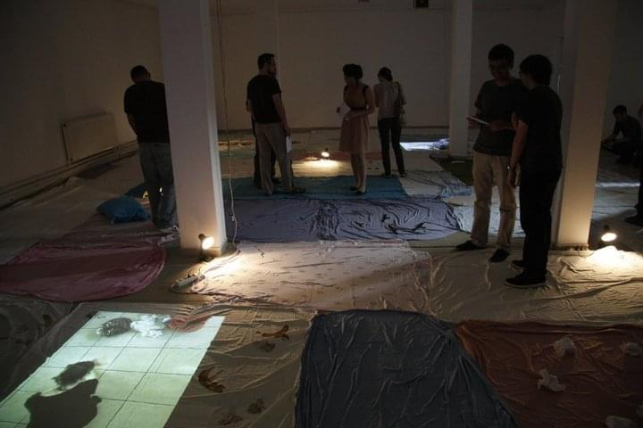
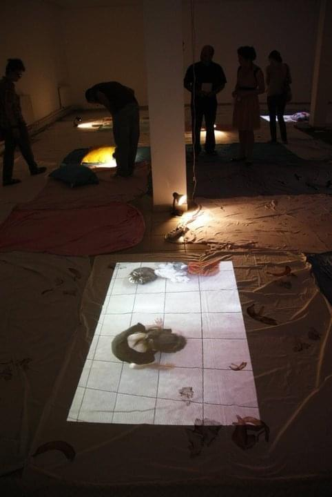
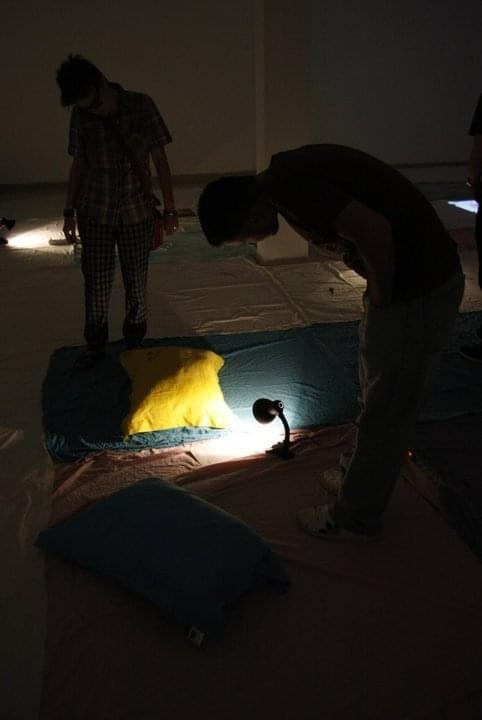
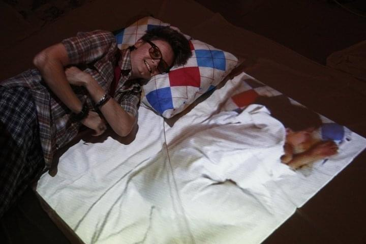
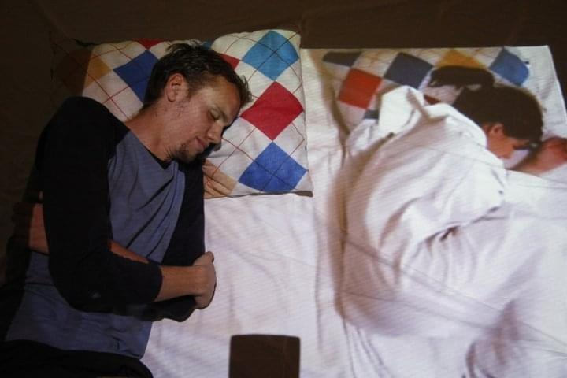
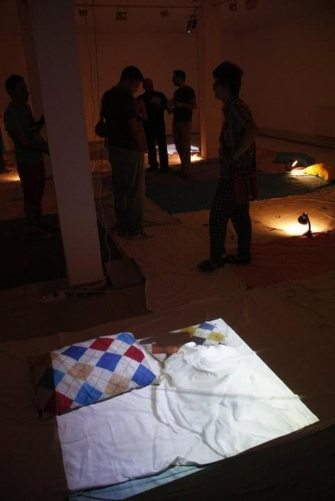
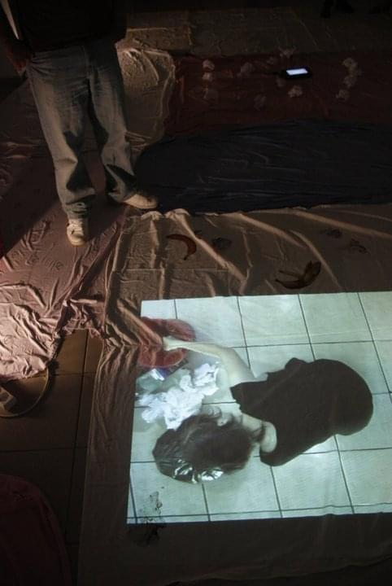
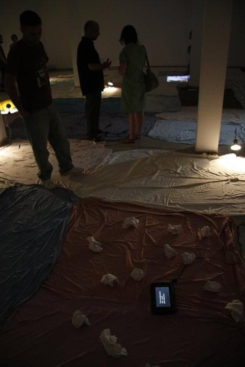
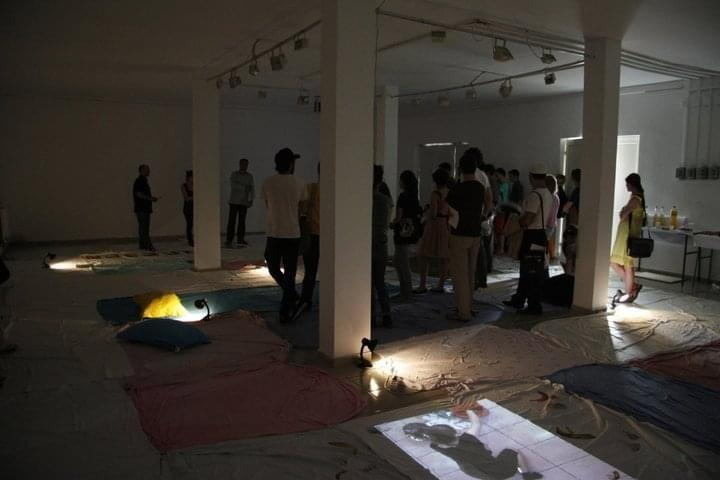
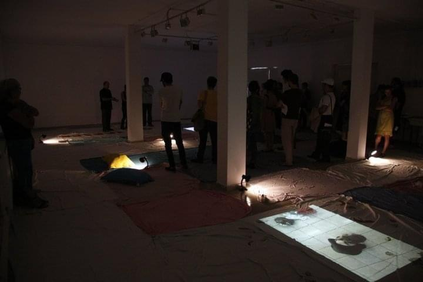
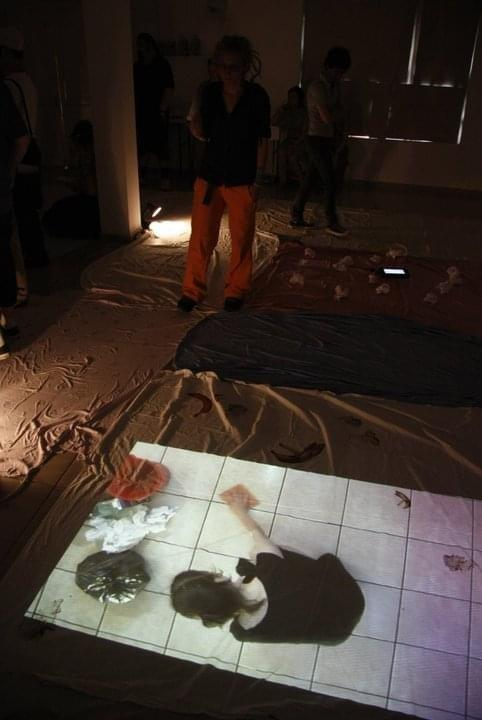
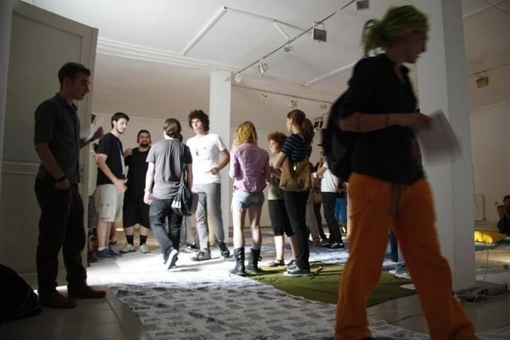
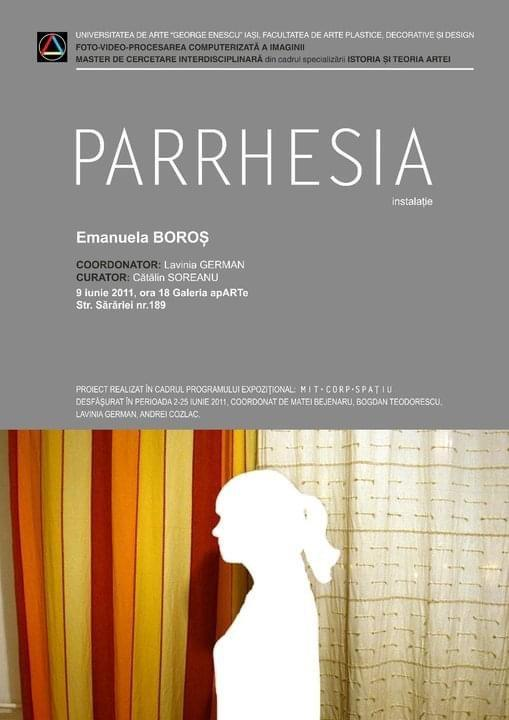